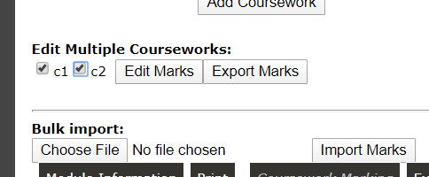

Minerva
Uni's Minerva documentation.
Grade Center. A super-messy corner of minerva used to upload coursework grades to students (exam grades are returned via SIS).
- Uploading hundreds of grades is non-trivial, you can use the spreadsheet interface for downloading and uploading marks, (you still have to create a folder for every student).
- The main page loads "on demand" with naaasty custom javascript scrolling-action, so you can't Ctrl+f search, and most clicks take a while process. Download the grade centre (to a secure computer...) as a spreadsheet and open in Excel. Filer: Upload/Download in the top right and download the whole thing.
- You can edit the downloaded file and use the upload option to bulk-update marks.
- You can download grades for a specific piece of coursework using the down arrow on an assignment - if you check the box it will also give you a column for feedback (this is between "SMART_TEXT" entries).
- You can edit this column to return text (or html?!) feedback to students.
- You can't return files to students easily in minerva. Some options:
SIS (previously EDASS) is where you have to add exam grades and copy the coursework grades from Minerva too after all the grading is complete.
You can edit the number (or weightings) of courseworks and exam questions, you should do this in SIS (note the "Add Coursework" button in the below image).
To upload exam paper drafts:
- From SIS home, select Computing, then Taught student records
- Click Assessment and examinations menu, then Access assessment materials repository
- Then upload a file, and select your course and give a reason (mostly ignored).
- When I uploaded docx files, they asked for PDFs (despite them providing docx templates....)
For entering exam marks into SIS, you can export/import an excel sheet:
- From SIS home, select Computing, then Taught student records
- click Enter Marks
- click your module name
- click coursework marking (or examination marking)
- check all the boxes and click export marks:

- edit the downloaded spreadsheet using your favourite script etc...
- when done, use Choose file / Import marks to pull back into minerva.
- if you have to do this twice, it might ask you to check a "confirm" box for every change. If you have 250 students and 3 bits of coursework, you will have to click 750 boxes....
- when done for CW+exam, click calculate grades
- update the final values (this is when you replace the grade with "AB" if they missed the exam).
- click the finalise grades button to signal that you're happy with the results.
In SIS and coursework:
- Where a student has not submitted a piece of coursework '-' should be marked against that component.
- Where a student has had an exemption from a piece of coursework '*' should be marked against that component.
- If the student did not submit any coursework, calculate the final grade, then record 'AB' in the final "Hand Edited Grade" column.
- If the module is examined 100% by coursework, according to the module catalog, then a student should be hand edited to "AB" if they failed to submit work for all assessments during the module.
For examination marks in SIS:
- Use '-' for questions that weren't answered.
- Students who did not attend the examination should be marked as ‘AB’ in the final grade (after you have calculated grades, you can then access the final (cw+exam) ) column Hand Edited Grade – the system remembers the CW grades as well even if you overwrite with AB.
Here is a spreadsheet I have previously used to import Minerva coursework grades into SIS. It uses the SID to align the rows correctly (you might have different students in SIS and Minerva....). If you copy and paste the Minerva and SIS spreadsheets into it, the green coursework grades should be in the right order to copy and paste into the SIS spreadsheet. You will need to adjust it for number of courseworks etc...
If you can write java, here is a project I'm working on which is a fast-page-turner and minerva-spreadsheet wrangler for coursework. It's just getting going and you'll have to ask me for permission.
Group-work is a good way to manage huge class sizes. Instructions here (click "other groups") for creating a bunch of groups and doing random allocation (everyone complains) or letting students sign up themselves (very good and very bad groups).
APIs. This is untested at scale:
- Minerva is based on blackboard with a publically documented api
- You can make calls to the api hosted using something like this when logged into 'erva
- You can scrape a session access token using Chrome + network view + viewing the grade centre. Search for something like "tokeninfo?=accesstoken="
{kind=link}